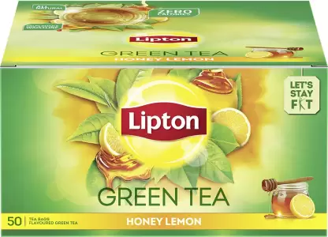

Its not just a cup of tea, its therapy - One Sip at a Time. Green Tea is not just a regular cup of chai, we believe its therapy for your body. Wake up to a morning cup of hot Lipton Green Tea and feel how it leaves you feeling light and active. Awaken your senses - one sip at a time. Lipton Green Tea Bags in Honey Lemon Flavor have this goodness. Choose Lipton Green Tea Tea Honey Lemon as your go-to beverage during the day. Buy Now! Magic of Lipton Green Tea is produced when freshly plucked leaves are heated, rolled/cut and then dried. The catechins in the fresh leaves are preserved during the Green Tea process, making green tea rich in catechins. Also, Green Tea is typically drunk without milk and sugar and hence gives zero calories as compared to the ordinary chai made with milk and sugar. Available in a Range of Flavors Lipton offers a range of different flavours to ensure that you are offered variety and enjoyment while drinking tea. Lipton flavours some of its teas with added natural flavours and no artificial flavours are used. You may try Lipton Green Tea in Pure & Light (unflavored), Tulsi Natura, Honey & Lemon and Lemon Zest flavors as well, available in pack sizes of 10s and 25s Tea bags. Next best to Water Brewed, Unsweetened Lipton Green Tea being 99.5% water is a great way to meet your daily required fluid intake. Staying hydrated is essential to ensure bodily functions are carried out efficiently.

| Item name | Item quantity | Price |
|---|---|---|
| Lipton Honey, Lemon Green Tea Bags Box (100 Bags) | 1 | 420 |
| MDH Haldi/Turmeric Powder, 500g | 1 | 249 |
| PASTIANO Macaroni Durum Wheat Pasta- 1 kg- Pack of 1 Macaroni Pasta (1 kg) | 1 | 179 |
| Haldiram's Soan Papdi (Regular) | 3 | 350 | total | 6 | 1198 |